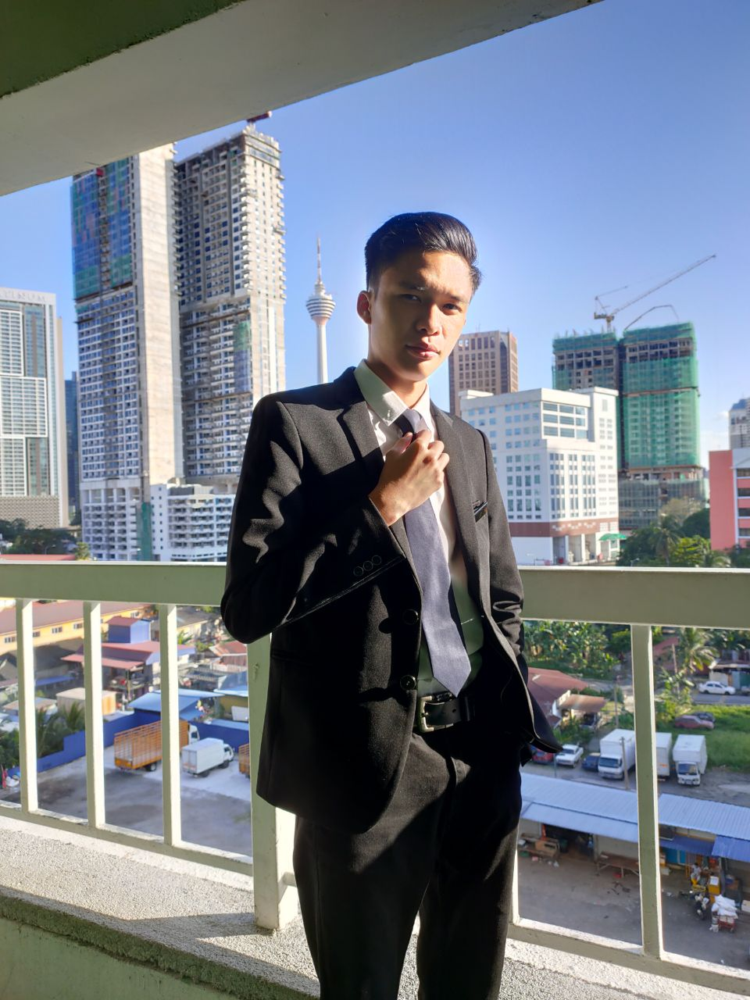
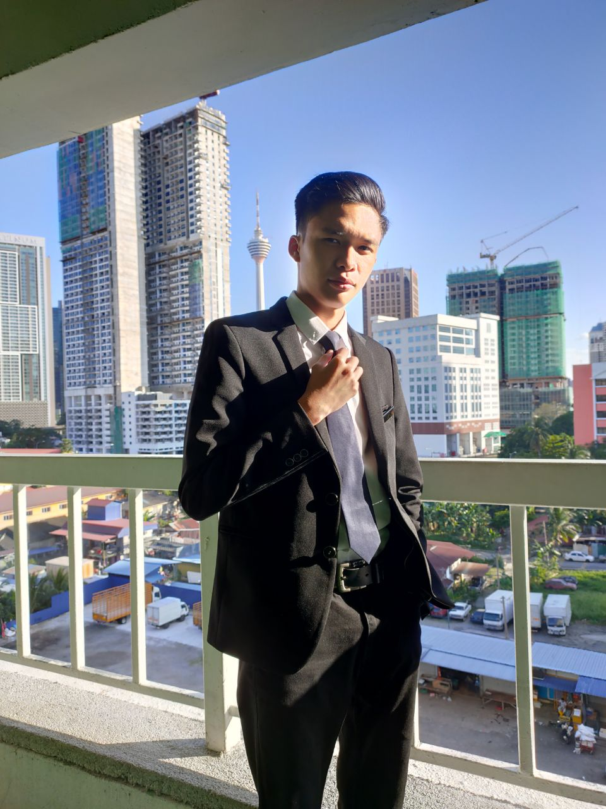

Highshcool
Since 2013 I studied at Maktab Rendah Sains Mara (MRSM) Kuala Terengganu and graduate in 2017. I fully active in both academic activites and non-academic activities during that time. One of my achievment in that highschool is that I became a President for PEERS club. That the same highschool that I took my PT3 in year 2015 and SPM in year 2017. 

University
I enter Universiti Teknologi Mara (UiTM) Kelantan and become their student since year 2018. I study in Diploma Information Management for 3 years and a half and this year is my last year before I graduate.